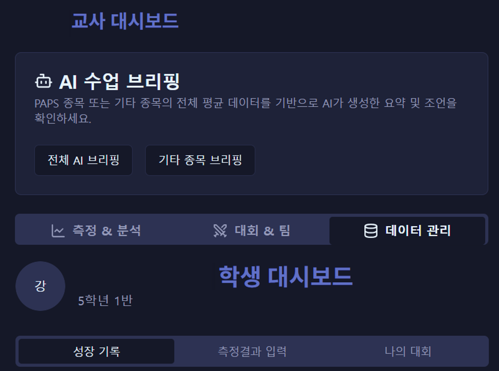
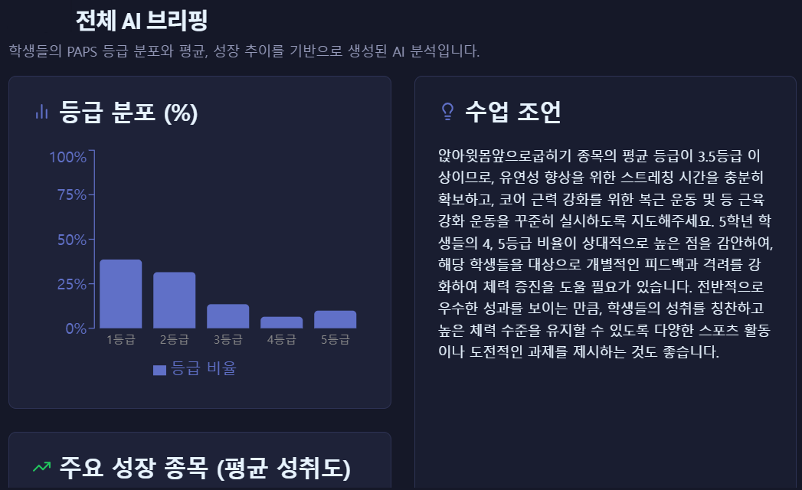
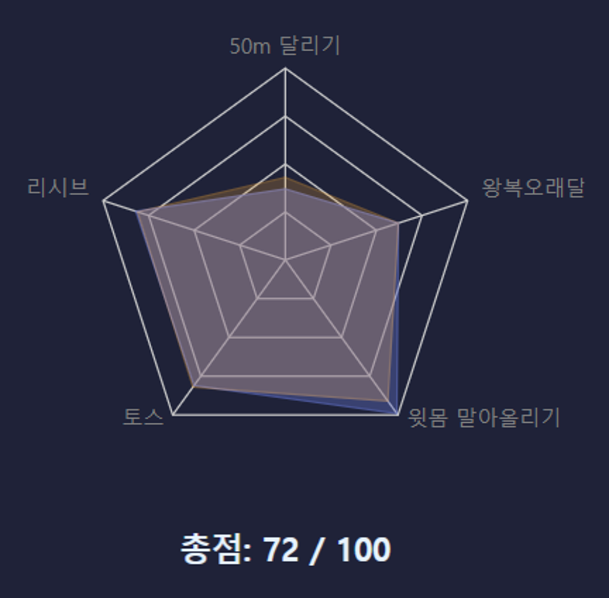
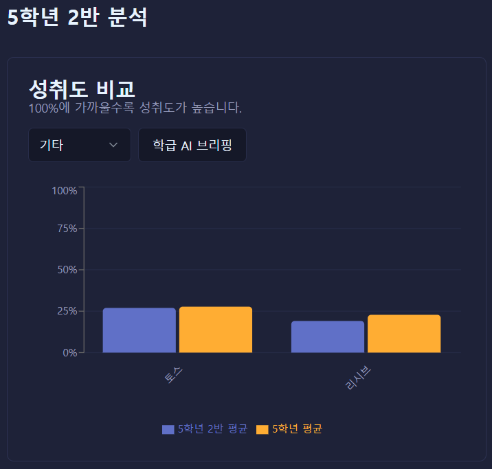

체육 성장 기록 시스템
AI 기반 학생 성장 분석 및 피드백
맞춤형 대시보드
- 교사용/학생용 대시보드 분리
- 데이터 실시간 상호 공유 및 확인


AI 기반 성장 분석
- 모든 체육 평가 결과의 자동 기록 및 누적
- AI가 데이터를 분석하여 맞춤형 피드백 제공함
개인 성장 & 팀 편성 시각화
- 개인 능력치 그래프로 개인 성취도 시각화
- 각 종목별로 자신의 성장 추이 비교 가능
- 방사형 그래프로 팀/학생 능력치를 한눈에 비교하여 공정한 팀 편성 지원


심층 데이터 분석
- 학생: 종목별 개인 성장 추이 비교 분석
- 교사: AI 브리핑으로 전체/학급 평균 확인
- 교사: 확인된 데이터를 차후 교육 계획에 참고
지속적인 성장 관리
- 학년도 변경 시 간편한 진급 정보 업데이트
- 중단 없는 데이터 추적 및 기록 관리
- 장기적인 학생 성장 포트폴리오 구축